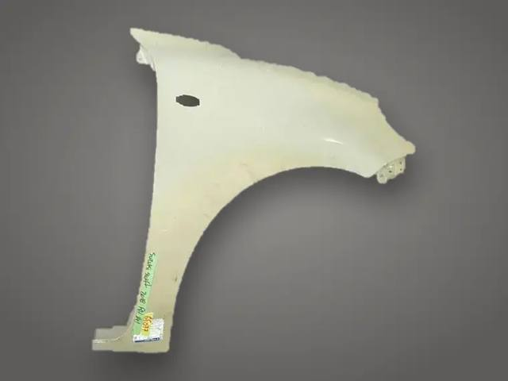
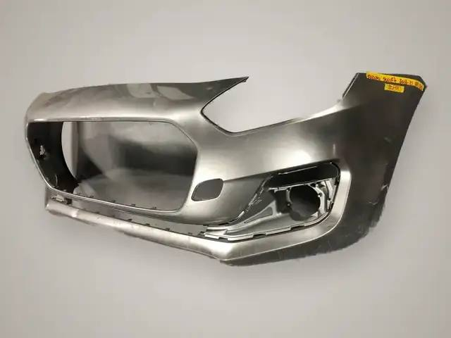
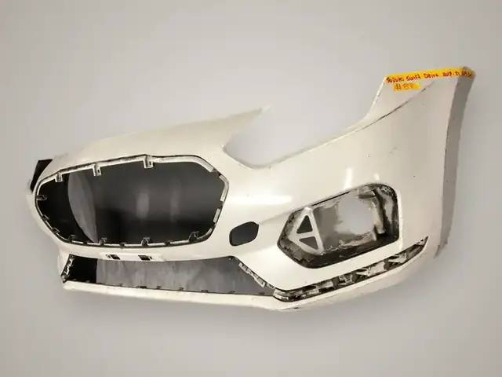
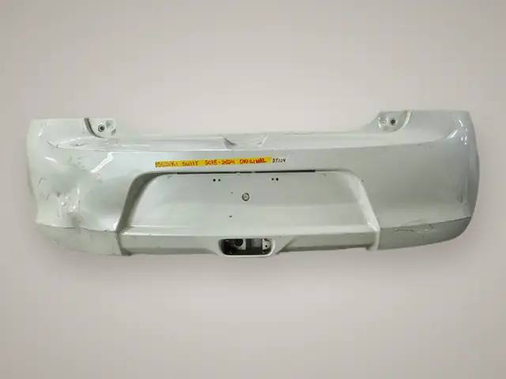
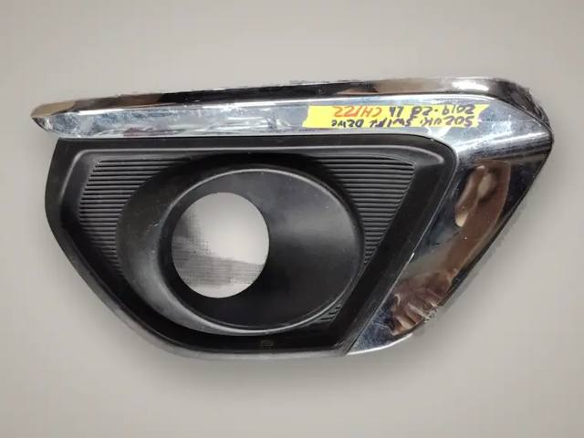
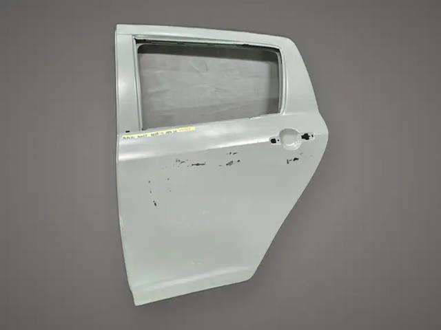

Piezas de carrocería para Suzuki Swift
29 piezas disponibles hoy para Suzuki Swift, cada una con su foto y su código: guardafangos (5), defensas delanteras (4), defensas traseras (4), covers de halógena (3). Dinos el año de tu carro y te confirmamos si le sirve.
- Garantía de 3 días
- Foto real de cada pieza
- Efectivo, Yappy o ACH
- Lunes a sábado, 8:00 a. m. a 5:00 p. m.
Guardafangos para Suzuki Swift 5
 GF074Swift2017-2024 · lado izquierdo · original
GF074Swift2017-2024 · lado izquierdo · original GF076Swift2021-24 · lado derecho · original
GF076Swift2021-24 · lado derecho · original
GF077Swift2018-20 · lado derecho · original GF080Swift2017-2024 · lado derecho · original
GF080Swift2017-2024 · lado derecho · original GF114Swift2017-2021 · lado izquierdo · original
GF114Swift2017-2021 · lado izquierdo · originalDefensas delanteras para Suzuki Swift 4

890Swift2016-21 · original 891Swift Dzire2022 · original
891Swift Dzire2022 · original
895Swift Dzire2017-21 · original DD020Swift Dzire2019-20 · original
DD020Swift Dzire2019-20 · originalDefensas traseras para Suzuki Swift 4
 DT102Swift2018-20 · original
DT102Swift2018-20 · original DT103Swift2018-22 · original
DT103Swift2018-22 · original
DT104Swift2018-24 · original DT107Swift2018-20 · original
DT107Swift2018-20 · originalCovers de halógena para Suzuki Swift 3
 CH014Swift2018-24 · lado derecho · original nuevo
CH014Swift2018-24 · lado derecho · original nuevo CH078Swift2007-10 · lado derecho
CH078Swift2007-10 · lado derecho
CH122Swift Dzire2019-23 · lado izquierdoFaros y lámparas delanteras para Suzuki Swift 2
 106Swift
106SwiftPuertas para Suzuki Swift 2

PT047Swift2008-2011 · lado izquierdo · original PT046Swift2018-24 · lado derecho · original
PT046Swift2018-24 · lado derecho · original PCh006Swift
PCh006Swift PCh007Swift
PCh007Swift 324Swift Dzire
324Swift Dzire 887Swift
887Swift RV019Ertiga / Swift
RV019Ertiga / Swift TM022Swift Dzire
TM022Swift Dzire CP088Swift Dzire
CP088Swift Dzire HA090Baleno / Swift
HA090Baleno / Swift TB027Swift
TB027Swift